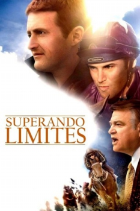

Superando Limites (2011)


Two brothers. One dream. The odds were incredible. And the story is true.

Avaliação (TMDb):


6.3/10 (12 votos)
Avaliação (Usuário):
Outro Título:The Cup
País:United States, 106 minutos
Idiomas falados:Inglês, Português
Gênero(s):Drama, História
Diretor(s):Simon Wincer
Codec:MPEG-2 (DVD)
Número: 5131
Sinopse:
Nascidos em uma família de corredores, os irmãos Damien e Jason seguem os mesmos passos da pai para participarem da famosa corridas de cavalos, a Copa Melbourne. Mas quando seu irmão morre, Damien luta para superar a perda e focar no campeonato.
Elenco:
Stephen Curry, Brendan Gleeson, Alice Parkinson, Bill Hunter, Tom Burlinson, Kate Bell, Daniel MacPherson, Jodi Gordon, Rodger Corser, Tory West
Tipo de mídia: DVD R/RW,
Legendas: Português, Sem Legendas
Alugado: Não
Tela: Anamorphic Widescreen